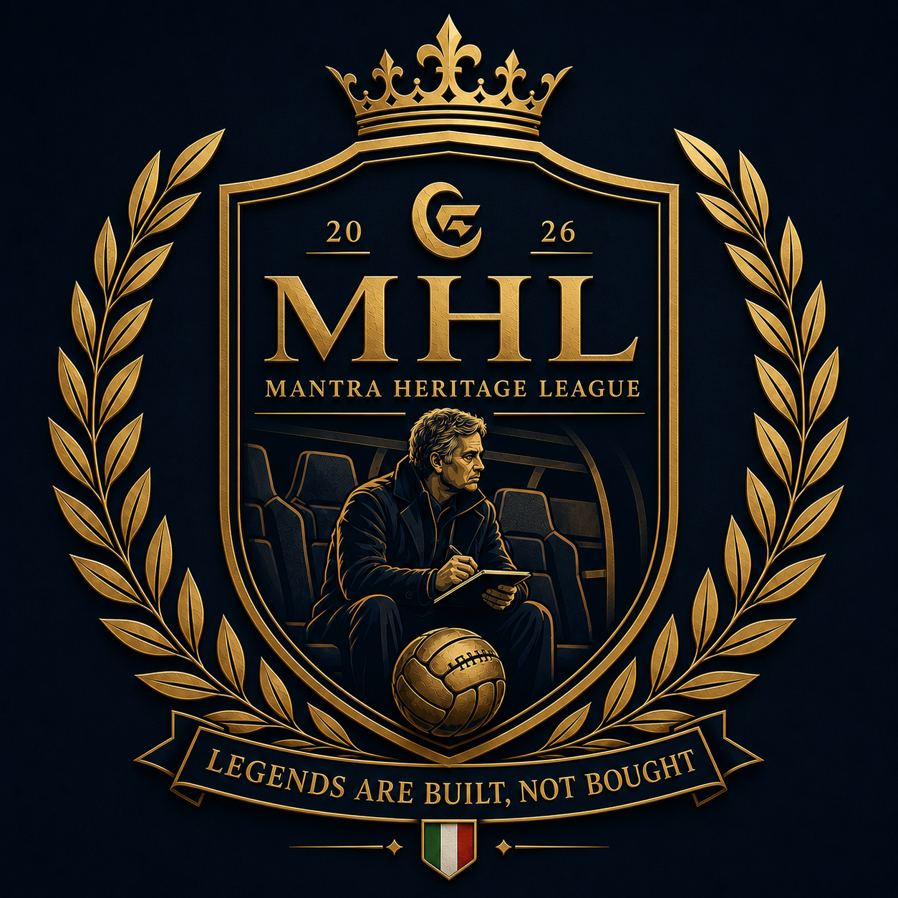

Regolamento MHL
La guida ufficiale della Mantra Heritage League. Regole, struttura e sistemi che definiscono la competizione.
Legends are built, not bought.
🖊️ Premesse MHL
La partecipazione alla Mantra Heritage League implica la piena accettazione del presente regolamento e dei principi che regolano la competizione.
- 📖 Ogni fanta-allenatore, al momento dell'iscrizione, dichiara di aver letto e accettato il regolamento MHL nella sua interezza.
- ⚖️ Il regolamento disciplina la maggior parte delle situazioni previste. Eventuali casi particolari verranno discussi dalla Commissione MHL attraverso il canale ufficiale Telegram.
- 🏟️ Ogni partecipante è tenuto a mantenere un comportamento attivo e collaborativo durante tutta la stagione, inserendo regolarmente la formazione e partecipando alla vita della lega.
- 💰 La quota di partecipazione verrà raccolta dall'admin tramite colletta PayPal nei giorni precedenti all'asta iniziale.
⚽ Struttura Competizione
- Modalità: Mantra
- Partecipanti: 10 Fanta-Allenatori
- Quota: 30€
- Budget iniziale asta: 500 FM
- App ufficiale: Leghe Fantacalcio
- Asta: Online su FantaLab
👥 Composizione Rosa
- 🏟️ Rosa Principale: 25 giocatori.
- 🌱 MHL Youth Academy: fino a 5 giocatori aggiuntivi, disciplinati dal Sistema Legacy.
- 👥 Rosa complessiva: fino a 30 giocatori.
I giocatori della MHL Youth Academy fanno parte a tutti gli effetti della rosa e possono essere regolarmente schierati durante la stagione.
🧤 Portieri
- Ogni squadra deve avere un minimo di 2 e un massimo di 4 portieri.
- Il limite è calcolato sull'intera rosa (Rosa Principale + MHL Youth Academy).
🏅 Capitano e Vice Capitano
- Ogni squadra deve designare un Capitano e un Vice Capitano a inizio stagione.
- Eventuali modifiche sono consentite esclusivamente durante il mercato di riparazione.
📌 Ruoli Ammessi
Ogni calciatore acquistato deve possedere almeno uno dei seguenti ruoli:
I giocatori privi di almeno uno dei ruoli indicati non possono essere inseriti nella rosa MHL.
🏆 Competizioni MHL
La Mantra Heritage League si sviluppa attraverso tre competizioni ufficiali, ognuna con caratteristiche e obiettivi differenti.
Il sistema è pensato per premiare diverse qualità dell'allenatore: continuità durante la stagione, capacità di gestione della rosa e abilità nelle sfide decisive.
🏆 MHL Championship
Il Campionato rappresenta la competizione principale della MHL. Una lunga stagione a scontri diretti dove viene premiata la capacità dell'allenatore di costruire una squadra competitiva e mantenere un rendimento costante.
⚽ Formula
- Girone unico con scontri diretti tra tutte le squadre partecipanti.
- Il calendario viene generato automaticamente dall'applicazione.
-
Ogni giornata assegna:
- 🥇 Vittoria → 3 punti
- 🤝 Pareggio → 1 punto
- ❌ Sconfitta → 0 punti
👑 Titolo
La squadra con il maggior numero di punti al termine della stagione viene proclamata:
⚖️ Parità in classifica
In caso di arrivo a pari punti verranno considerati nell'ordine:
- Punteggio totale squadra;
- Differenza reti;
- Gol fatti;
- Gol subiti;
- Classifica avulsa.
⚔️ MHL Last Man Standing
Una competizione in modalità Highlander dove l'obiettivo non è vincere ogni giornata, ma riuscire a sopravvivere più a lungo degli avversari.
La competizione premia la continuità di rendimento e la capacità dell'allenatore di evitare giornate negative.
⚔️ Formula
- Si svolge nel girone di andata
- Al termine di ogni giornata viene eliminata la squadra con il punteggio più basso.
- L'eliminazione prosegue fino alla giornata finale.
- L'ultimo allenatore rimasto in gara viene proclamato:
⚖️ Criteri di spareggio
In caso di parità nel punteggio più basso:
- Fantavoto più alto tra i titolari;
- Fantavoto più alto tra i panchinari non subentrati.
🏛️ MHL Heritage Cup
La Heritage Cup rappresenta la competizione ad eliminazione della MHL, dove strategia e gestione dei momenti decisivi diventano fondamentali.
📊 Fase a Gironi
- Si svolge nel girone di ritorno
- I due gironi da 5 squadre vengono generati tramite sorteggio automatico.
- Le squadre si affrontano con gare di andata e ritorno.
-
Il sistema punti è:
- 🥇 Vittoria → 3 punti
- 🤝 Pareggio → 1 punto
- ❌ Sconfitta → 0 punti
🏟️ Fase Finale
- Le migliori 2 squadre per girone accedono alla fase ad eliminazione diretta.
- Semifinali e finale si disputano con scontri diretti entrambi andata e ritorno.
-
In caso di parità:
- Punteggio totale;
- Supplementari;
- Rigori.
🏛️️ MHL Legacy System
Il MHL Legacy System è l'elemento distintivo della Mantra Heritage League. Nasce con l'obiettivo di premiare la programmazione, la continuità e la capacità di costruire una squadra nel tempo, senza rinunciare all'equilibrio competitivo.
⚖️ Filosofia Legacy
Il sistema si fonda su due pilastri: la MHL Youth Academy, che valorizza scouting e sviluppo dei giovani, e i Senior Legacy Players, che consentono di mantenere il nucleo della propria squadra stagione dopo stagione.
Il costo crescente delle conferme e il Salary Cap garantiscono un ricambio naturale dei giocatori, obbligando ogni allenatore a compiere ogni anno scelte strategiche tra continuità e rinnovamento.
Nel corso degli anni alcuni calciatori potranno diventare vere e proprie bandiere del club, accompagnando lo stesso allenatore per più stagioni e contribuendo a costruire l'identità della squadra. Sarà il manager a decidere se continuare a investire su di loro oppure aprire un nuovo ciclo tecnico.
È proprio questa continuità a trasformare una semplice squadra in una dinastia e un grande giocatore in una leggenda della MHL.
"Legends are built, not bought."
🎓 MHL Youth Academy
La MHL Youth Academy premia gli allenatori capaci di individuare giovani talenti e costruire il futuro del proprio club.
📋 Requisiti
Può essere inserito nella MHL Youth Academy esclusivamente un calciatore che, al momento dell'acquisto:
- sia un under 23
- non sia mai stato tesserato dal club nelle stagioni precedenti;
- sia un giocatore di movimento o un portiere.
- sia valutato e ritenuto idoneo dall'admin
Giocatori esclusi dal Vivaio
I seguenti giocatori, pur potendo rientrare nei requisiti anagrafici, sono esclusi dal Vivaio:
- Inter: Sucic, Pio Esposito, Bonny
- Milan: Bartesaghi, Bondo, Camarda
- Juventus: Yildiz, Alajbegovic, Ekhator
- Como: Ramon, Valle, Paz, Jesus Rodriguez, Diao
- Roma: Koulierakis, Wesley, Castro
- Napoli: Giovane
- Atalanta: Scalvini, Bernasconi
- Fiorentina: Jimenez, Ndour, Mastrantuono
- Parma: Circati
- Genoa: Norton Cuffy
- Torino: Comuzzo
- Lecce: Thiago Gabriel
⚽ Utilizzo
I giocatori della MHL Youth Academy fanno parte a tutti gli effetti della rosa e possono essere regolarmente schierati durante tutta la stagione.
- maturano voto, bonus e malus come qualsiasi altro giocatore;
- mantengono lo status Youth Academy fino alla scadenza prevista;
- possono essere confermati senza occupare uno slot Senior.
🔄 Permanenza e Riconferma
Lo status di Youth Academy può essere mantenuto per un massimo di 2 stagioni sportive.
Al termine della seconda stagione o qualora l'età sia di 23 anni, il giocatore perde automaticamente lo status Youth Academy e, se riconfermato, diventa un Senior Legacy Player. Questa casistica è indipendente dal Salary Cup e il costo di riconferma segue la regola della Youth Academy
Valore d'acquisto della stagione precedente + 10 crediti
Esempio:
- Acquistato a 5 → riconferma a 15
- Stagione successiva → riconferma a 25
🤝 Vincoli e Scambi
Il giocatore acquistato nella MHL Youth Academy è vincolato alla società fino al termine della stagione sportiva.
Gli scambi sono consentiti esclusivamente tra giocatori che possiedono entrambi lo status Youth Academy.
In caso di scambio vengono mantenuti:
- status Youth Academy;
- anzianità maturata;
- costo storico utile alla riconferma.
⭐ Senior Legacy Players
Le riconferme Senior permettono agli allenatori di mantenere il nucleo della propria squadra stagione dopo stagione, costruendo vere e proprie bandiere del club.
👥 Numero massimo
Ogni squadra può riconfermare un massimo di 3 Senior Legacy Players per stagione.
💰 Costo di riconferma
Esempi:
- 20 → 50 crediti
- 80 → 110 crediti
📊 Salary Cap
Le riconferme Senior non hanno un limite di stagioni. Il loro mantenimento è regolato esclusivamente dal costo crescente della riconferma e dal Salary Cap.
Esempio:
- Giocatore A → 90
- Giocatore B → 60
- Giocatore C → 30
Nota: i giocatori della MHL Youth Academy non rientrano nel calcolo del Salary Cap.
🔨 Aste MHL
Le aste rappresentano il momento principale della costruzione e della gestione delle squadre della Mantra Heritage League. Ogni allenatore dovrà pianificare le proprie scelte considerando il sistema Mantra, il budget disponibile e il MHL Legacy System.
🏟️ Asta Iniziale
💻 Piattaforma
L'asta iniziale della MHL viene svolta online tramite
FantaLab, utilizzato come strumento ufficiale
per la gestione degli acquisti e del budget disponibile.
La modalità è random su tutto il listone.
💰 Budget iniziale
500 FM per ogni allenatore
I crediti devono essere utilizzati per la costruzione della rosa secondo i vincoli previsti dal regolamento.
👥 Costruzione della rosa
Ogni squadra deve essere composta da:
- 25 giocatori appartenenti alla rosa principale;
- 5 giocatori appartenenti alla MHL Youth Academy;
- un minimo di 2 portieri e un massimo di 4 portieri complessivi.
I giocatori della MHL Youth Academy fanno parte a tutti gli effetti della rosa e possono essere regolarmente schierati.
⚽ Costruzione tattica
La MHL utilizza il sistema Mantra. Durante l'asta ogni allenatore dovrà costruire una rosa equilibrata, considerando ruoli, moduli disponibili e copertura dei reparti.
La scelta dei giocatori rappresenta una componente strategica fondamentale: una rosa competitiva non dipende solamente dal valore dei singoli calciatori, ma dalla capacità di creare una struttura completa e flessibile.
💳 Crediti residui
I crediti eventualmente non utilizzati durante l'asta iniziale non vengono trasferiti alla stagione successiva.
Ogni nuova stagione tutte le squadre ripartono dal budget iniziale previsto dal regolamento.
🔄 Mini Mercato Post-Asta
Qualora l'asta iniziale della MHL venga svolta prima della chiusura ufficiale del calciomercato della Serie A TIM, è prevista una sessione straordinaria di mercato per permettere agli allenatori di completare e correggere la propria rosa dopo le ultime movimentazioni del mercato reale.
📋 Giocatori sostituibili
La sessione prevede due differenti categorie di sostituzione:
🔹 Svincoli Standard
- Ogni squadra può effettuare un massimo di 2 svincoli Standard.
- Gli svincoli Standard non possono riguardare giocatori appartenenti alla MHL Youth Academy.
- Il credito recuperabile è pari al 50% dei crediti spesi all'asta iniziale, arrotondando per eccesso in caso di valore dispari.
- Acquistato a 10 crediti → recupero 5 crediti
- Acquistato a 15 crediti → recupero 8 crediti
🔹 Svincoli Straordinari
Sono previsti svincoli straordinari per giocatori:
- ceduti all'estero;
- non più presenti nel listone Serie A;
- fuori dalla competizione per cause che ne impediscono l'utilizzo.
In questi casi il recupero crediti è pari al 100% dei crediti spesi all'asta iniziale.
📅 Comunicazione Svincoli
Gli allenatori interessati devono comunicare gli svincoli alla Commissione MHL almeno 48 ore prima dello svolgimento del Mini Mercato Post-Asta.
La Commissione provvederà alla verifica degli svincoli e all'aggiornamento dei crediti disponibili prima dell'inizio dell'asta.
🔨 Modalità Asta
I giocatori disponibili vengono assegnati tramite asta su app con modalità a rilanci.
- L'asta di ogni singolo giocatore ha una durata iniziale di 24 ore dal momento della prima offerta.
- Il giocatore viene assegnato al miglior offerente allo scadere del termine.
- In caso di rilanci successivi, il termine dell'asta viene aggiornato automaticamente secondo le regole della piattaforma.
🔄 Asta di Riparazione
📅 Periodo
L'asta di riparazione viene svolta successivamente alla chiusura della sessione invernale di mercato della Serie A TIM, in data stabilita dalla Commissione MHL.
🔨 Modalità di chiamata
La modalità di chiamata è singola su tutto il listone disponibile.
L'ordine di chiamata segue la classifica del MHL Championship al momento dell'asta, procedendo in ordine inverso:
- inizia l'ultimo classificato;
- si procede fino al primo classificato;
- terminato il giro, l'ordine riparte con la stessa modalità.
🚑 Svincoli consentiti
Possono essere svincolati esclusivamente giocatori appartenenti alla propria rosa nei seguenti casi:
- infortunio Standard;
- cessione all'estero;
- infortunio grave con assenza prolungata (es. crociato).
💰 Recupero crediti dagli svincoli
- 100% dei crediti spesi per giocatori ceduti all'estero o con infortunio grave;
- 50% dei crediti spesi per giocatori con infortunio Standard (arrotondato con +1 credito in caso di valore dispari).
🚫 Limitazioni
- I giocatori svincolati non possono essere riacquistati dallo stesso allenatore durante l'asta di riparazione.
- Gli svincoli devono essere comunicati alla Commissione MHL secondo le modalità e tempistiche stabilite prima dell'asta.
🤝 Sessione Scambi
Gli scambi rappresentano uno strumento strategico attraverso cui gli allenatori possono modificare e migliorare la propria rosa durante la stagione, mantenendo sempre equilibrio e competitività all'interno della Mantra Heritage League.
📅 Finestre Scambi
Durante la stagione sono previste specifiche finestre temporali dedicate agli scambi tra gli allenatori.
-
Pausa Nazionali: 21 settembre-6 ottobre 2026
3 slot scambio disponibili
2 slot prestiti disponibili (durata massima 8 giornate) -
Pausa Nazionali: 9-17 novembre 2026
3 slot scambio disponibili
2 slot prestiti disponibili (durata massima 8 giornate) -
Pausa Nazionali: Sessione Mercato Invernale: 1-31 Gennaio 2027
5 slot scambio disponibili
3 slot prestiti disponibili (durata massima 8 giornate)
Per ogni sessione c'è un totale di 3 slot scambio disponibili
🔄 Modalità degli Scambi
Ogni slot scambio può coinvolgere un massimo di 3 giocatori per squadra.
Sono consentiti esclusivamente scambi:
- 1 giocatore contro 1 giocatore;
- 2 giocatori contro 2 giocatori;
- 3 giocatori contro 3 giocatori.
Non sono ammessi scambi che prevedano esclusivamente trasferimenti di crediti o condizioni future non previste dal regolamento.
🔄 Modalità dei prestiti
Ogni slot prestito può coinvolgere un massimo di 1 giocatore per squadra.
La durata massima del prestito è di 8 giornate
Non sono ammessi prestiti che prevedano esclusivamente trasferimenti di crediti o condizioni future non previste dal regolamento.
📲 Procedura Operativa
Gli scambi/prestiti vengono concordati direttamente tra gli allenatori e successivamente comunicati alla Commissione MHL.
- I due allenatori raggiungono un accordo sullo scambio/prestito.
- L'operazione viene comunicata sul canale ufficiale della lega.
- Trascorse 24 ore senza contestazioni, lo scambio/prestito viene autorizzato e può essere completato sulla piattaforma.
🎓 Scambi MHL Youth Academy
I giocatori appartenenti alla
MHL Youth Academy
possono essere oggetto di scambio mantenendo invariato il proprio status.
Non sono invece idonei ai prestiti
In caso di trasferimento, il giocatore conserva:
- status Youth Academy;
- anni di permanenza maturati;
- costo storico utile al calcolo delle riconferme.
Non è possibile trasformare un giocatore Senior in Youth Academy attraverso uno scambio.
⚖️ Equilibrio e Fair Play
Gli scambi fanno parte della strategia manageriale della lega e si basano sulla libera trattativa tra gli allenatori.
La Commissione MHL può intervenire esclusivamente in presenza di operazioni palesemente squilibrate o contrarie allo spirito della competizione, con l'obiettivo di tutelare il corretto svolgimento della lega.
Ogni scambio deve essere effettuato nel rispetto della competizione, evitando operazioni prive di logica sportiva o finalizzate ad alterare l'equilibrio della lega.
🚑 Sostituzione Giocatori Infortunati
Durante la stagione ogni allenatore ha la possibilità di sostituire uno o più calciatori della propria rosa qualora vengano rispettate specifiche condizioni legate agli infortuni.
🟣 Clausola Infortunio Standard
La clausola può essere attivata quando un giocatore risulta indisponibile per almeno:
equivalenti a 5 🟣 consecutivi nella sezione presenze della scheda giocatore.
La sostituzione può essere richiesta senza limite massimo durante la stagione, ad eccezione del periodo previsto per il mercato di riparazione.
🚨 Clausola Infortunio Grave
La clausola può essere attivata in caso di infortunio grave che comporti la conclusione anticipata della stagione sportiva del calciatore.
L'infortunio dovrà essere certificato attraverso fonti sportive attendibili e sottoposto alla verifica della Commissione MHL.
La Clausola Infortunio Grave non presenta limiti di utilizzo e non rientra negli svincoli standard del mercato di riparazione.
🔄 Regole della Sostituzione
Il giocatore scelto come sostituto dovrà rispettare i seguenti requisiti:
- avere almeno un ruolo Mantra in comune con il giocatore sostituito;
- avere una quotazione attuale uguale o inferiore rispetto al giocatore sostituito.
📅 Periodi di Applicazione
Le clausole sono attive nei seguenti periodi:
- dalla conclusione dell'asta iniziale fino all'apertura del mercato di riparazione;
- dalla conclusione dell'asta di riparazione fino al termine della stagione previsto dal regolamento.
🔒 Sospensione periodo mercato invernale
Durante il mese di gennaio le sostituzioni per Infortunio Standard sono sospese.
Gli eventuali giocatori che soddisfano la clausola durante questo periodo saranno gestiti all'interno del mercato di riparazione invernale, rientrando negli svincoli standard disponibili.
Gli infortuni classificati come gravi continueranno invece a essere considerati slot extra e potranno essere gestiti separatamente dal mercato di riparazione.
🏆 Premi e Awards
La MHL assegna premi stagionali e riconoscimenti manageriali raccolti nella sezione:
Vai alla MHL Legacy⚖️ Regole Generali MHL
Questa sezione raccoglie le regole comuni a tutte le competizioni della Mantra Heritage League e definisce i criteri di assegnazione dei punteggi, gestione della formazione e comportamento durante la stagione.
Ogni allenatore è tenuto a rispettare le tempistiche e le modalità previste dal regolamento, contribuendo al corretto svolgimento della competizione e mantenendo un atteggiamento attivo per tutta la durata della stagione.
⚽ Sistema Punteggi e Bonus/Malus
Il punteggio di ogni squadra viene determinato dalla somma dei voti dei calciatori schierati, ai quali vengono applicati i bonus e malus previsti dalla piattaforma ufficiale.
⚽ Soglie Gol
- 1 gol → 66 punti
- 2 gol → 72 punti
- 3 gol → 78 punti
- 4 gol → 84 punti
- 5 gol → 90 punti
➕ Bonus
- ⚽ Gol segnato: +3
- 🥅 Rigore segnato: +3
- 🧤 Rigore parato: +3
- 🎯 Assist: +1
- 🧱 Porta inviolata: +0,5
➖ Malus
- 🥅 Gol subito: -1
- ❌ Rigore sbagliato: -3
- 🟨 Ammonizione: -0,5
- 🟥 Espulsione: -1
- ⚠️ Autogol: -2
- Fonte voti: Fantacalcio
- Bonus Fair Play: Attivato
- Sistema sostituzioni: Master
- Switch Plus: Attivato
- Timeout inserimento formazione: 1 minuto
🧢 Capitano e Vice Capitano
Ogni allenatore deve designare ad inizio stagione un Capitano e un Vice Capitano della propria squadra.
- La modifica dei capitani è consentita esclusivamente dopo l'asta di riparazione successiva alla chiusura del mercato invernale.
- Capitano e Vice Capitano devono avere almeno un ruolo tra: Por, Dc, Dd, Ds, B, E, M, C.
- Non è possibile scegliere giocatori con soli ruoli offensivi: T, W, A, Pc.
In ogni giornata il Capitano assegna un bonus o un malus in base al proprio voto puro (non fantavoto), secondo le fasce previste dalla piattaforma.
🔄 Cambio Capitano in caso di scambio
- Se viene ceduto il Capitano, il Vice Capitano diventa automaticamente Capitano e deve essere scelto un nuovo Vice.
- Se viene ceduto il Vice Capitano, deve essere scelto solamente il nuovo Vice.
🛡️ D-Factor Mantra
Il D-Factor è il modificatore difensivo della MHL che premia le prestazioni del reparto difensivo attraverso la media voto dei calciatori coinvolti.
A differenza del modificatore difesa classico, il D-Factor è sempre attivo per ogni modulo Mantra.
📊 Calcolo
- Viene considerato il portiere.
- Vengono considerati i migliori 5 giocatori con ruolo compatibile: Dc, Dd, Ds, E, M.
- Conta esclusivamente il ruolo del calciatore e non la posizione nella quale viene schierato.
- Nel caso siano presenti più di 5 giocatori idonei, vengono considerati i 5 con il voto migliore.
Le fasce di bonus e malus del D-Factor sono quelle definite dall'applicazione ufficiale.
📝 Mancato Inserimento Formazione
Ogni allenatore è responsabile dell'inserimento della propria formazione entro i termini previsti dall'applicazione ufficiale.
In caso di mancato inserimento della formazione, per tutte le competizioni in corso nella giornata verrà automaticamente recuperata la formazione schierata nella giornata precedente.
🏆 MHL Championship
- Il primo mancato inserimento stagionale non comporta alcuna penalizzazione.
- Dal secondo mancato inserimento, verrà applicata una penalizzazione di -1 punto in classifica per ogni giornata nella quale la formazione non viene inserita.
🏆 MHL Cups
Nelle competizioni a coppa il mancato inserimento della formazione non comporta penalizzazioni nelle classifiche delle eventuali fasi a girone.
⚔️ MHL Last Man Standing
Nella competizione Highlander la squadra che non inserisce la formazione viene eliminata automaticamente nella giornata coinvolta.
Nel caso in cui più squadre non inseriscano la formazione nella stessa giornata, l'eliminazione sarà assegnata alla squadra che ottiene il punteggio più basso utilizzando la formazione recuperata dalla giornata precedente.
La partecipazione attiva rappresenta uno dei valori fondamentali della lega. Le regole sono pensate per tutelare la competitività e premiare continuità, attenzione e rispetto verso gli altri allenatori.
🌧️ Partite Rinviate e Recuperi
In caso di rinvio di una o più partite del campionato di Serie A TIM, la gestione dei calciatori coinvolti seguirà modalità differenti in base alla competizione interessata.
🏆 MHL Championship
- Se la data del recupero viene comunicata ufficialmente e la partita verrà disputata entro 30 giorni dalla data originale, la giornata verrà congelata e calcolata successivamente al recupero.
- In tutti gli altri casi verrà applicato il 6 politico ai calciatori coinvolti.
⚔️ MHL Last Man Standing e 🏆 MHL Heritage Cup
- In caso di partita rinviata verrà applicato sempre il 6 politico.
- Non verrà quindi atteso l'eventuale recupero della gara.
Le competizioni a eliminazione diretta richiedono una gestione rapida delle giornate e dei verdetti. Per questo motivo viene applicato un criterio uniforme senza attendere eventuali recuperi.